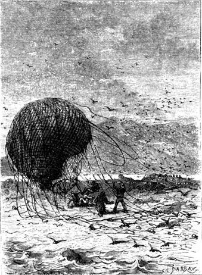
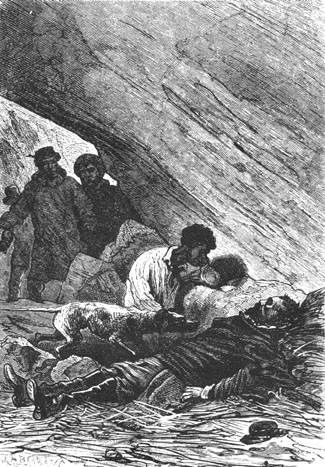

Cyrus Smith

Els nàufrags de l'aire
Cyrus Smith, primer personatge, més que protagonista, de L'illa misteriosa. Vegem com ens el descriu Verne: "Cyrus Smith, originari de Massachussets, era un enginyer i un científic de primera categoria, a qui el govern de la Unió havia confiat, durant la Guerra de Successió, la direcció dels ferrocarrils, que tan gran importància estratègica van tenir. Típic americà del Nord, prim, d'aspecte desmanegat, d'uns quaranta-cinc anys, encanudits els seus cabells curts així com el bigoti, posseïa un d'aquells bonics caps "numismàtics" que semblen fets expressament per ser encunyats en medalles, una mirada ardent, una boca que expressava serietat i la fisonomia d'un savi de l'escola militar. Era un d'aquests enginyers que han volgut començar pel maneig del martell i el pic, igual com els generals que han volgut començar com a soldats rasos. Per això, Cyrus Smith unia a l'enginy de la ment una perfecta habilitat manual. Els seus músculs demostraven una notable tonicitat. Veritable home d'acció a més d'intel·ligent, actuava sense esforç sota la influència d'una àmplia expansió vital i el domini de la viva perseverança que desafia a qualsevol adversitat. Molt culte, "pràctic" i, per dir-lo vulgarment, "espavilat", era un temperament magnífic, per tal com sense perdre en cap circumstància el domini d'ell mateix posseïa les tres condicions de vigor físic, impetuositat de desigs i força de voluntat. El seu lema hauria pogut ser el de Guillem d'Orange en el segle XVII: "No necessito esperar per emprendre, ni encertar per perseverar".

Cyrus Smith trobat ferit
Cyrus Smith, model de l'enginyer del segle XIX troba la manera d'exercitar les seves qualitats i de crear, al capdavant dels altres "nàufrags de l'aire" -Gedeon Spilett, cronista del "New York Herald", el mariner Pencroff, el negre Nabucodonosor, anomenat Nab, i el jove Herbert Brown-, un món del no res, una colònia model i una república minúscula però exemplar, en aquella Illa misteriosa que reuneix en si mateixa les qualitats homèriques de l'Iliada i l'Odissea extretes del mític món grec i transportades al mónrealíssim del segle XIX.
Cyrus Smith envoltat pels seus companys de naiufragi